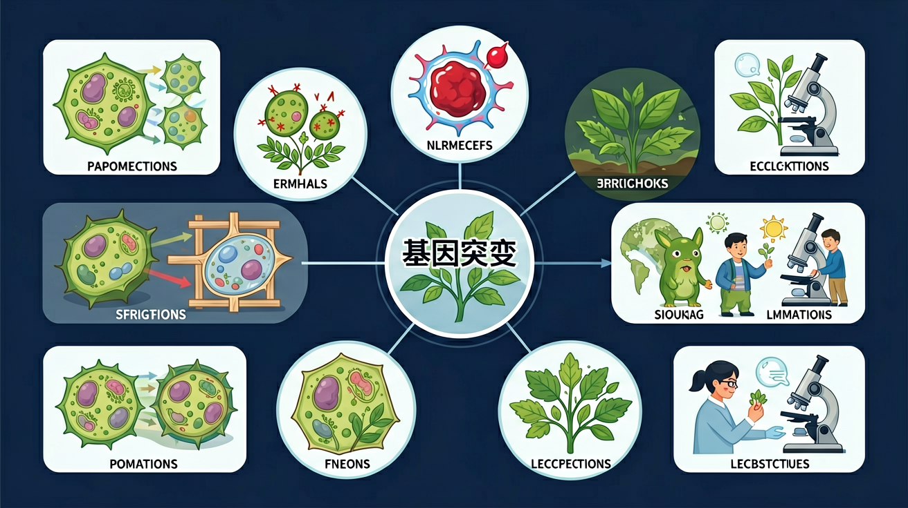
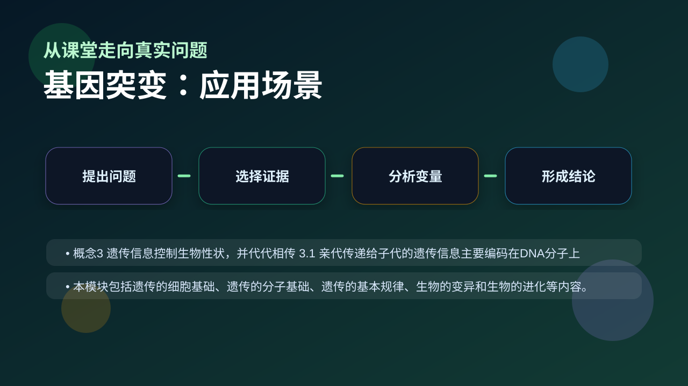

Gallery v1.0.0 · skill v7.14
遗传信息怎样被保存、表达、传递，又怎样影响性状？

已经知道：学生此前已掌握基因控制性状的基本原理，知道DNA是遗传物质，并通过《基因的本质》章节学习了基因的化学本质是有遗传效应的DNA片段。
但问题是：容易混淆基因突变与染色体变异的概念，难以理解碱基对改变如何通过影响蛋白质结构最终导致性状改变，常误认为所有突变都导致表型变化。
所以学：在分析镰刀型贫血症病例时，需要准确判断患者血红蛋白基因的碱基替换如何影响蛋白质功能，进而解释贫血症状的分子机制。
先选一个卡点。后面的例子、互动和 AI 学伴都会围绕它给你最小提示。
选择或输入后，本课会围绕你的问题展开。
下列哪种变化属于基因突变？
现象入口：同一生物不同性状由不同基因影响，但基因不等于性状本身。
机制解释：基因通常是有遗传效应的DNA片段，通过控制蛋白质或RNA影响性状。
证据抓手：证据来自基因定位、突变后表型变化和表达产物检测。
变量线索：基因序列、表达水平、调控区域和环境条件。做题时先找变量，再判断机制，最后写证据。
观察镰刀型红细胞与正常红细胞的形态差异，理解基因突变对蛋白质结构的影响
分析碱基替换、增添、缺失三种突变类型对密码子阅读框架的不同影响
结合密码子简并性说明同义突变不改变氨基酸序列的分子机制
预测紫外线诱发胸腺嘧啶二聚体可能导致的突变类型及对DNA复制的阻碍
情境：白化病不是“没有黑色素基因”，而是相关酶或表达过程异常导致黑色素合成受影响。
作答路径：白化病现象：患者皮肤缺乏黑色素→机制：酪氨酸酶基因突变导致催化活性丧失→证据：基因测序发现该酶编码区第278位碱基T突变为A，使蛋白质第93位苯丙氨酸替换为亮氨酸
评分提醒：典型失分：将染色体变异误认为基因突变；未区分突变类型对性状的影响程度（如移码突变影响＞替换突变）
先用 PhET 观察转录和翻译如何把遗传信息转成蛋白质，再回到本课的 Canvas 任务，把“信息流”与 基因突变 联系起来。
💡 操作提示：拖动调控元件，观察 mRNA 和蛋白质产量变化，思考“表达量变化”和“性状变化”之间的证据链。
同义突变不改变氨基酸；错义突变换一个；无义突变提前终止；移码突变改变下游全部序列——影响逐级加重。
💡 探究任务：对比四种突变的蛋白改变程度，用密码子的简并性解释为什么同义突变常常“无害”。
把基因、DNA、染色体和性状画等号，是遗传分子基础的核心误区。
只说“增加/减少”不够，要写清改变的是 基因序列、表达水平、调控区域和环境条件 中的哪一个。
没有实验现象、曲线趋势或结构证据，答案就像猜测。
关于突变特点说法正确的是？
视频用语音和动态画面回顾本课主线：问题情境 → 机制模型 → 证据判断 → 迁移应用。

解释基因检测和性状预测时，要说明基因如何通过表达影响表型。
提交后会检查你的解释是否包含现象、机制和变量。
如果学生只说出概念名称，继续追问：题干里哪个证据最关键？这个证据对应分子、细胞、个体还是生态系统层级？如果改变 基因序列、表达水平、调控区域和环境条件 中的一个条件，结果会怎样？这三问能把答案从背诵推进到科学解释。
写出基因突变的三种类型及其对密码子影响
分析白化病案例：为何突变基因仍存在但表现为性状异常？
设计实验验证某紫外线诱发突变是否属于碱基替换类型
下列哪项最能体现基因突变的特点？
学习小结：基因突变是DNA碱基对的替换/增添/缺失导致基因结构改变，通过密码子简并性等机制，突变可能改变性状（如镰刀型贫血）或保持中性（同义突变）。
先独立作答，再点选项查看对错与错因。
该患者发病的根本原因是
该突变最可能发生在
若该突变使谷氨酸变为缬氨酸，说明突变影响了
基因突变具有____的特点，该病例中父母正常而子女患病属于____遗传病。
答案：低频性,隐性
突变频率低且需纯合突变才表现症状
该突变导致血红蛋白____结构改变，使红细胞在____条件下易变形。
答案：空间,低氧
蛋白质构象变化影响功能
关于基因突变叙述正确的是
设计实验比较紫外线与化学诱变剂对大肠杆菌突变率的影响
❓ 为啥基因突变不都是坏的？
❓ 突变后的基因还能变回去吗？
❓ 爸妈没突变为啥我会突变？
学完这一课，这些问题你都能自信地回答。
✅ 中性突变普遍存在，如沉默突变
💡 教材案例多聚焦致病突变
✅ 用'字母拼写错误'vs'整段乱码'类比区分
💡 两者都属可遗传变异
口诀：添缺替换碱基变，功能可能天地翻
类比：像打字打错字——偶尔敲错键（自然突变），泼咖啡在键盘上（诱变）